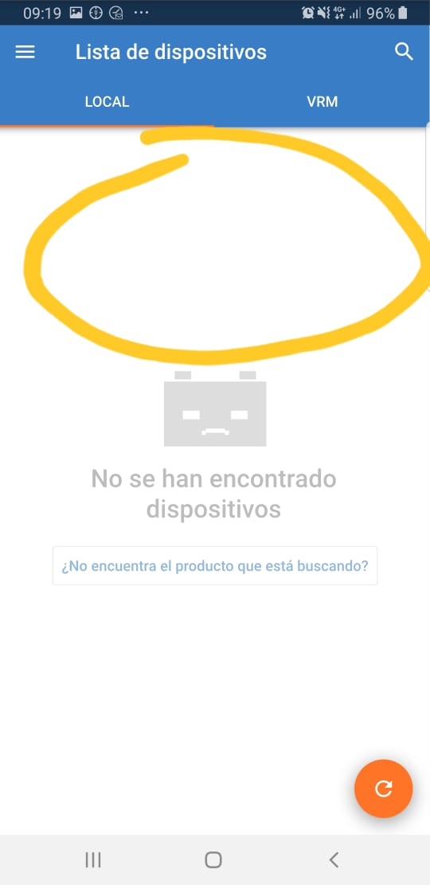
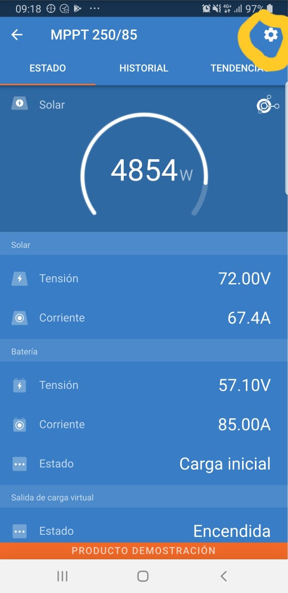
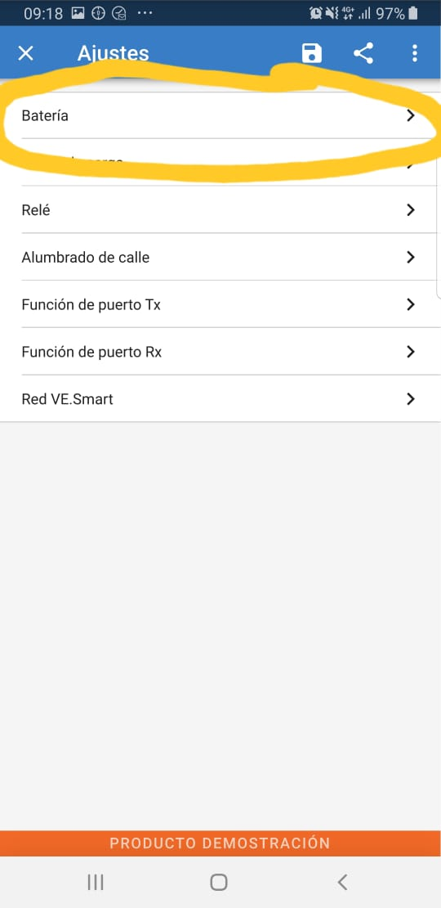

Solucionar Error 38 en controladores MPPT Victron
A. Instrucciones sin Victron Connect
- Desconectar todos los paneles en los switch que hay en cada estructura de paneles solares. Dejarlos en off
- Apagar el inversor, dejarlo en OFF.
- Abrir el tablero eléctrico. Bajar el automático de las baterías. En caso de no estar indicado, bajar los 3.
- Esperar 5 minutos.
- Volver a subir el automático de las baterías en el tablero eléctrico (o todos en caso que estén todos abajo).
- Volver a poner el switch de los paneles en las estructuras en posición ON.
- Ver en el Battery Monitor (el redondo en el tablero eléctrico) el voltaje de las baterías (moviendo las teclas + y -) y ver si este empieza a aumentar hasta pasar los 50V (o sobre 25V en sistemas de 24).
- También ver en el mismo indicador el número que sale en A. Ver VIdeo Adjunto. Si es positivo, los paneles están cargando (tomar nota de los números vistos ahí).
B. Instrucciones CON Victron Connect
- Descargar e instalar la aplicación Victron Connect (Google Play o App Store).
- Activar el Bluetooth en el celular.
- Abrir la aplicación estando al lado del cargador solar y apretar el botón redondo inferior donde sale refrescar.
- Debería aparecer el controlador solar, pinchar sobre el controlador solar. Si pide contraseña esta es: 000000

- En caso de que arroje un error, tomar nota del número del error y cerrarlo para continuar.
- Una vez adentro seleccionar la configuración arriba a la derecha (se adjunta foto).

- Luego seleccionar Batería.

- Luego seleccionar que el voltaje de batería sea 48V. O en caso de que el sistema sea de 24V, seleccionar 24V.

- Una vez realizado esto se deben volver a hacer los pasos 1-8 hechos previamente en la parte A. (partiendo con desconectar los paneles).
Acá el video que indica el uso del Battery Monitor Victron.